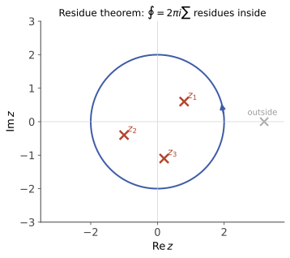

本页目录
复变 III · 级数、奇点与留数定理
收官页三步走：Taylor/Laurent 级数（解析函数的显微镜）→ 奇点分类（病灶的病理学）→ 留数定理（把积分变成数系数的机械操作，反手收割一批实积分）。数分 IV 留下的那个收敛半径之谜也在本页揭晓。
学习层：先审计围道，再让留数定理出具证书
1. 预测门：每一个极点真的能被普通定理接纳吗？
本实验固定一族有理型 Laurent 数据：每个极点都有极点阶数和留数，围道是一个可改变方向、半径和绕行次数的圆。先预测三件事：
- 是否存在
on-contour极点；若有，普通留数定理是否还能直接给出围道积分？ - 对一个严格在圆内的极点，顺时针一次还是逆时针一次的 winding sign 应该是什么？绕两圈会怎样？
- 留数和究竟只收 inside，还是把 outside 也加进来，或把 on-contour 当成“半个 inside”？
点击揭晓前，极点分类、绕数、留数和、SVG 与审计表都隐藏。换预设、半径、方向或绕行次数会重新锁住预测。
2. 透明模型：位置、阶数和 winding 分账
设围道是圆 \(C\)，中心 \(c\)、半径 \(R\)，方向符号为 \(epsilonin{+1,-1}\)，绕行次数为 \(n\)。对极点 \(z_k\)，实验先按
审计为 inside / on-contour / outside。只有在第一或第三种情形，绕数才定义为
on-contour 的绕数在本实验中记为 undefined，不是 \(1/2\)。当且仅当没有极点落在围道上，透明证书才是
这里的“极点阶数”仍要单独登记：二阶、三阶极点并不会因为留数表只显示一个 \(c_{-1}\) 就变成单极点；阶数判定与留数计算是两本账。
JavaScript 失效时的静态 fallback：默认取逆时针单位圆、绕行一次，极点为 \(z=0\)（一阶，\(operatorname{Res}=1\)）、\(z=1/2\)（二阶，\(operatorname{Res}=-1/2\)）和 \(z=3/2\)（三阶，\(operatorname{Res}=2\)）。因此前两个是 inside，后一项是 outside：
| 极点 | 阶数 | 位置 | winding | 留数 | winding × 留数 |
|---|---|---|---|---|---|
| \(0\) | 1 | inside | \(+1\) | \(1\) | \(1\) |
| \(1/2\) | 2 | inside | \(+1\) | \(-1/2\) | \(-1/2\) |
| \(3/2\) | 3 | outside | \(0\) | \(2\) | \(0\) |
inside 留数和为 \(1/2\)，winding 加权和也为 \(1/2\)，所以普通定理给出 \(oint_C f\,dz=\pi i\)。若把围道改为顺时针双绕，加权和会变成 \(-1\)；若把极点移到 \(|z|=1\) 上，普通留数定理不可直接使用，实验只给出 on-contour 警告，不给出积分数值。有限阶数、inside/outside/on-contour、方向和 winding 必须全部先通过审计。
3. 读账规则与边界
- 普通定理有前提。极点在围道上时，主值、缩进围道或半留数需要额外的局部几何与积分定义；它们不是本页普通定理的自动分支。
- 方向不是装饰。逆时针给正 winding，顺时针给负 winding；多重绕行按次数线性累加。
- 外部奇点不入账。它们可以影响函数的全局解析表达式，却不进入当前围道的 residue sum。
- 有限实验不是一般证明。SVG 只画所选圆与有限个极点；留数定理的适用仍由“闭曲线、有限孤立奇点、无极点在曲线上”等条件保证。
1. Taylor 级数与收敛半径之谜
定理 \(f\) 在 \(z_0\) 解析 ⇒ 在最大解析圆盘内 \(f(z) = \sum_{n=0}^\infty \frac{f^{(n)}(z_0)}{n!}(z - z_0)^n\)，且收敛半径 = \(z_0\) 到最近奇点的距离。
（来源：Cauchy 积分公式中把 \(\frac{1}{z - z_0}\) 展成几何级数——解析与幂级数在复平面是同义词。）
兑现数分 IV 的悬案：\(\frac{1}{1 + x^2}\) 在实轴上处处光滑，为何 Taylor 级数只在 \(|x| < 1\) 收敛？——因为奇点在 \(\pm i\)，到原点的距离是 \(1\)。实轴上看不见的复奇点决定了实级数的命运：不上复平面，这题无解。
2. Laurent 级数与奇点分类
在环域（挖掉奇点的圆环）上，解析函数展成双向幂级数：
负幂部分称主部。孤立奇点按主部三分类（病理学）：
| 类型 | 主部 | 判据 | 例 |
|---|---|---|---|
| 可去奇点 | 无 | \(\lim f\) 存在有限 | \(\frac{\sin z}{z}\) 在 \(0\)（补定义即愈） |
| \(m\) 阶极点 | 有限项（到 \(c_{-m}\)） | \(\lim\lvert f\rvert = \infty\)；\((z-z_0)^m f\) 解析非零 | \(\frac{1}{z^2}\) |
| 本性奇点 | 无穷项 | 极限不存在也不趋 \(\infty\) | \(e^{1/z}\) 在 \(0\) |
本性奇点的狂野一嘴（Picard 大定理）：任意小邻域内取遍几乎所有复值——病得最重也最深刻。
3. 留数定理（本课程的收官大定理）

定义 留数 \(\mathrm{Res}(f, z_0) = c_{-1}\)（Laurent 展开中 \(\frac{1}{z - z_0}\) 的系数——复变 II 基础例说过：只有这一项在围道积分中幸存）。
定理（留数定理） \(f\) 在闭曲线 \(C\) 内除有限个孤立奇点外解析：
（思路：Cauchy 定理的围道变形——大围道缩成绕各奇点的小圈，每圈只有 \(c_{-1}\) 存活。）积分 = 数系数，从此复积分是机械劳动。
留数速算三式（覆盖 95% 场景）：
- 单极点：\(\mathrm{Res} = \lim_{z\to z_0}(z - z_0)f(z)\)；
- 单极点、\(f = \frac{P}{Q}\) 型（\(Q(z_0) = 0 \neq Q'(z_0)\)）：\(\mathrm{Res} = \dfrac{P(z_0)}{Q'(z_0)}\)（最常用）；
- \(m\) 阶极点：\(\mathrm{Res} = \frac{1}{(m-1)!}\lim_{z \to z_0}\frac{d^{m-1}}{dz^{m-1}}\big[(z - z_0)^m f\big]\)。
4. 收割实积分（留数定理的名场面）
型 I（三角有理式） \(\int_0^{2\pi} R(\cos\theta, \sin\theta)\,d\theta\)：令 \(z = e^{i\theta}\)（\(\cos\theta = \frac{z + z^{-1}}{2}\)，\(d\theta = \frac{dz}{iz}\)），化为单位圆围道积分——数圈内留数。
型 II（有理函数全线积分） \(\int_{-\infty}^{+\infty}\frac{P(x)}{Q(x)}dx\)（\(\deg Q \geq \deg P + 2\)，\(Q\) 实轴无零点）：上半平面加大半圆封口（ML 不等式证明半圆贡献 \(\to 0\)）：
型 III（含振荡因子） \(\int \frac{P}{Q}e^{i\omega x}dx\)（Jordan 引理放宽到 \(\deg Q \geq \deg P + 1\)）——Fourier 变换的围道算法：数分 IV/概率 IV 特征函数表里那些"查表"结果（如 Cauchy 分布的 \(\varphi(t) = e^{-|t|}\)），出厂车间就是这里。
5. 典型例题
例 1（留数定理主流程） \(\oint_{|z|=2}\frac{z}{(z-1)(z+3)}dz\)：圈内仅单极点 \(z=1\)，\(\mathrm{Res} = \frac{1}{4}\) ⇒ 积分 \(= \frac{\pi i}{2}\)。
例 2（型 II 实积分） \(\int_{-\infty}^{\infty}\frac{dx}{1 + x^4}\)：上半平面极点 \(e^{i\pi/4}, e^{3i\pi/4}\)，用 \(\frac{P}{Q'}\) 式：\(\mathrm{Res} = \frac{1}{4z^3}\big|_{z_k} = -\frac{z_k}{4}\)；和 \(= -\frac{1}{4}(e^{i\pi/4} + e^{3i\pi/4}) = -\frac{i\sqrt2}{4}\) ⇒ 积分 \(= 2\pi i \cdot(-\frac{i\sqrt2}{4}) = \frac{\pi}{\sqrt 2}\)。（实方法对它无从下手——留数的招牌胜利。）
例 3（奇点判型） \(f = \frac{1 - \cos z}{z^2}\) 在 \(0\)：分子 \(\sim \frac{z^2}{2}\) ⇒ \(\lim f = \frac12\)——可去奇点，留数为 \(0\)。先判型再算留数，判成极点直接套公式会白算。\(\blacksquare\)
复变三页完工：解析（C–R）→ 积分（Cauchy 双定理）→ 级数与留数——一条"条件极强、回报极高"的理论弧线。下一门实变函数：反方向的旅程——把可积的条件放到最宽。